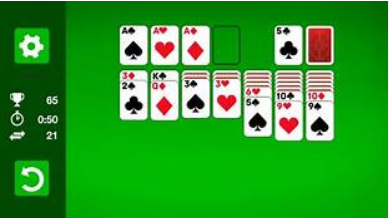

What is a Web Application?
A web application is a computer program that utilizes web browsers and web technology to perform tasks over the
Internet.
E-Commerce
Do you own an online business or do you own a business you want to take online? There are a number of Web Applications
that make online shopping a breeze for your customers.
Shopping Carts

The selling of good online or e-retailing is booming.Online stores are designed using the electronic catalog and shopping cart
model.Shopping cart applications allow users to save items they want to purchase, calculate the price - including postage,
packaging and even taxes.
Instant Messaging
Everybody knows the Facebook ping? A little blue message into your inbox.But Social Media is not the only
place instant messaging is benefical, it is also a vital application on any website. Real-time web chats-allow for a
direct line of communication between you and your clients.
Gaming

Microsoft Solitaire was on of the first Gaming Applications ever introudcued. Since then there has been
many advances in gaming applications.
Multiplayer Online Games
Online games like World of War Craf see millions of people logging on everyday. Player logon and are
linked to the server. The server acts as a storage system that keep track of different players. When players
follow a quest or kill goblin, the server transmits the signals to other users computers. This is how players
can interact together on a real-time basis.